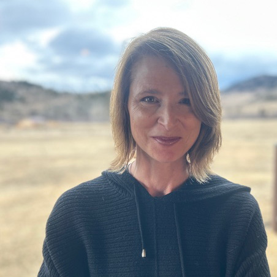
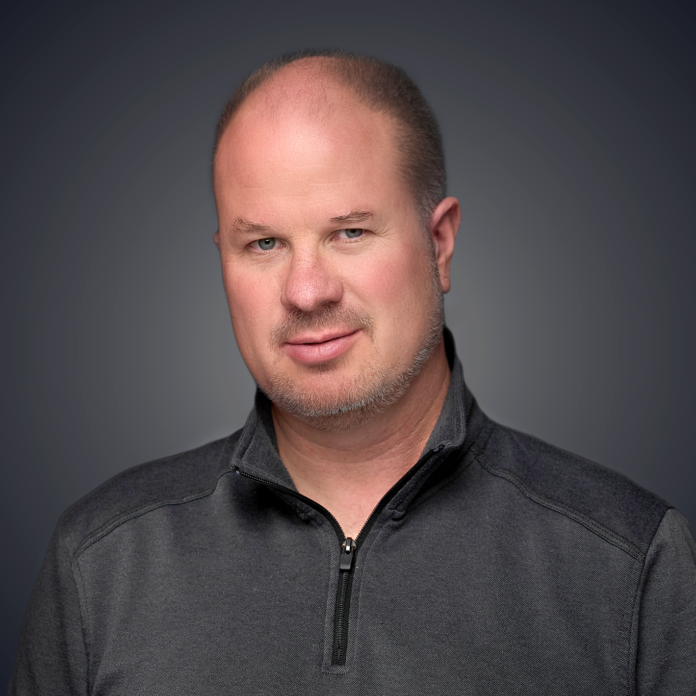
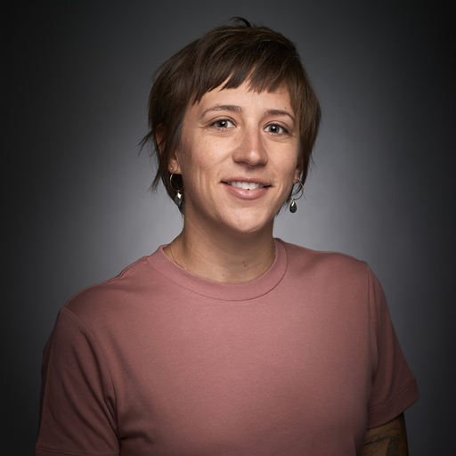
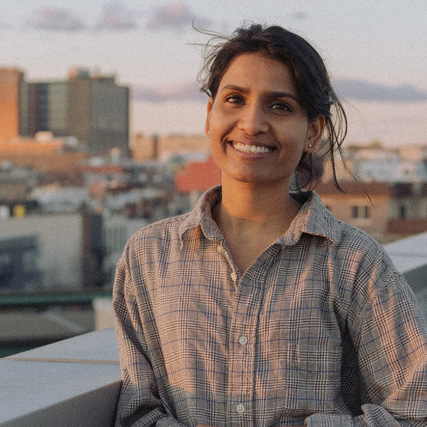
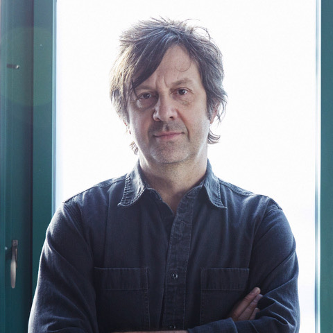
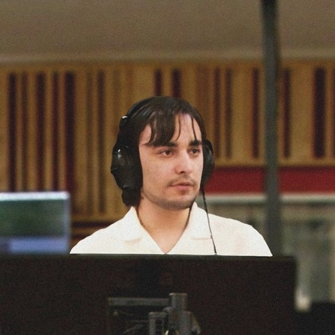
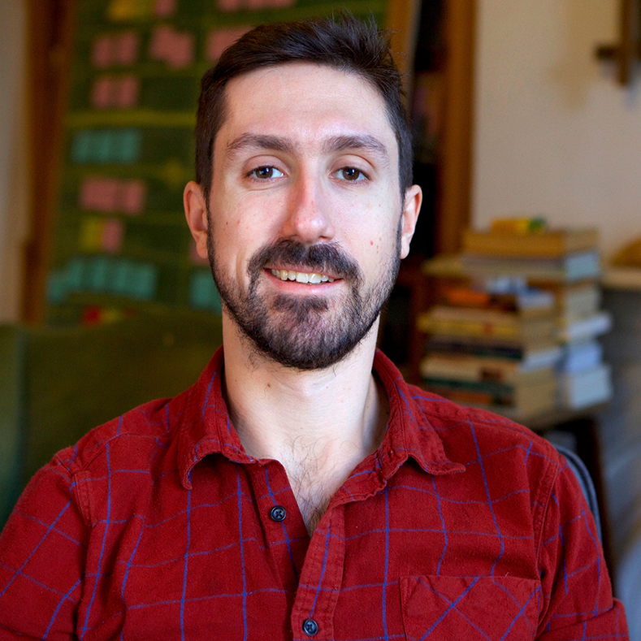
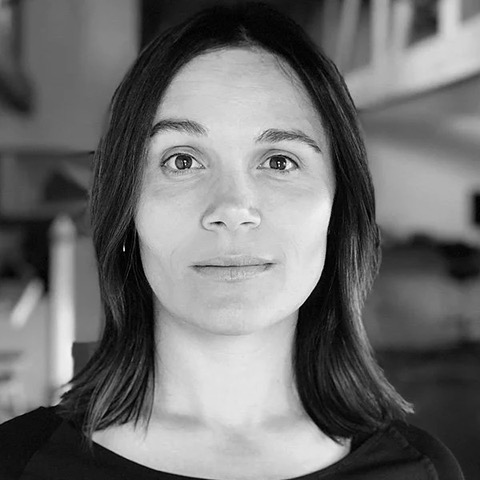
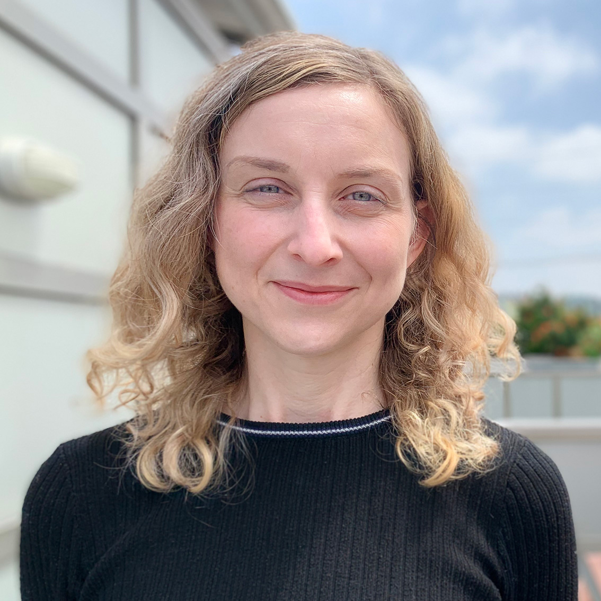

Jonnie Jonckowski is a Montana legend. She grew up with a passion for horses, natural athleticism and a relentless competitive drive. In her early twenties—just when her dream of becoming an Olympic pentathlete was within reach—she was permanently sidelined by a back injury. In search of a new challenge, Jonnie set her sights on an unlikely pursuit: professional bull riding.
Jonnie’s intrepid pursuit of a world title in the 1980s defied gender stereotypes and resulted in life-threatening injuries. It also ushered in a turbulent personal journey marked by poverty, heartbreak, and assault. And now, four decades later, Jonnie still rises to meet strenuous challenges: rescuing abandoned horses, battling natural disasters, and fiercely devoting herself to helping a community in need.
The feature-length Jonnie chronicles the life of an extraordinary woman with extraordinary mental and physical toughness. Using a graceful blend of archival and verité footage, intimate interviews with bull riding experts (including nine-time World Rodeo Champion Ty Murray), and flashbacks brought to life through artful sketch animation, the film offers a deep and provocative dive into the world of professional bull riding. At once wild and inspiring, Jonnie explores the human need to find meaning in whatever we do.

Director & Producer Sabrina Lee has been telling stories for most of her life. Previously a modern dancer and choreographer, in 2005 she turned her artistic eye toward documentary filmmaking after spotting a hand-painted sign in a cow pasture that read “Hip-Hop Show Tonight.” She went on to create the award-winning documentary Where You From and later produced/co-directed Not Yet Begun to Fight, a New York Times pick for “What to Watch” when it premiered on PBS. In addition to working as a story consultant on numerous projects, Sabrina co-produced/wrote the Montana PBS documentary Ivan Doig: Landscapes of a Western Mind, distributed nationally through American Public Television.

Scott Sterling was born and raised in the Rocky Mountains of Colorado, where exposure to the rugged outdoors, arts, and culture inspired a passion for visual art and storytelling. Sterling serves as the Director of Production for Montana PBS in Bozeman, MT. His work as producer, director, editor, and cinematographer includes the award-winning documentary features Mavericks, The Violin Alone, and Fort Peck Dam, and the signature music performance series 11th & Grant with Eric Funk, now in its 16th season. Scott also works as an independent colorist and finishing editor, with recent work including National Parks: USA and Path of the Panther on National Geographic/Disney+, Bring Them Home on PBS, American Amazon on PBS Nature/Terra Mater Studios, and Epic Yellowstone on Paramount+. Scott has earned fourteen Northwest Emmy® Awards and revels in the juxtaposition of story, art, and technology that is contemporary filmmaking.
For 28 years, Aaron has provided leadership in programming, production, fundraising and management at Montana PBS. He served as Executive Producer for many award-winning productions including 11th & Grant with Eric Funk, Class C: The Only Game in Town, Fort Peck Dam, Finding Traction, Keeping the Barn and Charlie Russell's Old West. Pruitt collaborates with independent filmmakers distributing programs to national public television, such as The Last Artifact (APT), Before There Were Parks: Yellowstone and Glacier Through Native Eyes (PBS NPS) and two PBS INDEPENDENT LENS documentaries, Butte America and Indian Relay.

Erika brings a wealth of production experience to our team. She is a co-owner of Wild Vision Films, a Bozeman-based production company and is a newly appointed Senior Producer for Montana PBS. She serves in many capacities, from cinematographer to editor to producer, on films for Disney+, Magnolia Network, NBC Peacock, Discovery Channel, National Geographic, and others. Prior to her freelance work, she served as senior producer and editor for “The Onion” in Chicago. wildvisionfilms.com for recent work

Sakshi is an animator, illustrator and educator from India, based in New York City. She graduated with an MFA in Computer Arts from School of Visual Arts. Her visuals are instinctive, sometimes abstract with raw and jittery lines filled with muted, earthy colors. Emerging often in response to poetry in words or in nature, embodying experiences recorded in speech or found in sound. She is often found with a tiny sketchbook in subways or parks. Currently she teaches at Pratt and School of Visual Arts. Select clients include - The New York Times, The Atlantic, PBS, Autodesk, Samsonite, Doritos, Walmart, Entenmann's and The Backseat Lovers. Her work has been recognized by The Centre Pompidou, Society of Illustrators, American Illustration, Tribeca Film Festival, The Museum of Moving Image and traveled around the globe in multiple festivals.

Sean Eden is a guitarist, composer and member of the iconic band Luna, whose album Penthouse was named one of the Top 100 Albums of the 90’s by Rolling Stone magazine. Sean collaborated with his bandmates to write music for feature films including Thursday, Mr. Jealousy, and Sideways. As a solo artist, he has composed music for programs on NBC, PBS, AMC, and scored several independent feature films, including Paper Man, the award-winning documentary Not Yet Begun To Fight, and the horror film Hypothermia. He has also created music and sound design for video games and interactive projects.

Tiago Nugent is an award-winning composer and sound designer based in Washington state. His works include music for film, animation, and games, as well as concert music. He was born in Massachusetts to a family of musicians. His father, Erik, a flute repairman and multi-instrumentalist, taught him to love music. He has since grown to have an extensive knowledge of music of all types, as well as an intimate connection to the orchestra. His influences range from film composers such as John Williams and Hans Zimmer to classical and contemporary composers such as John Adams, Steve Reich, Berlioz, and Beethoven. His compositional style is a mix of classical and popular music from the last century, and he often defies genres.

Tony Hale is an Emmy-winning documentary editor based in Brooklyn, NY. His first feature documentary, A Will for the Woods, which he co-directed and edited, won multiple awards (including two at Full Frame) and aired nationally on PBS. Recently, Tony won the national Emmy for Outstanding Documentary Writing on The Story of Plastic (Discovery) and the Jackson Wild Media award for editing on YOUTH v GOV (Netflix). His other feature editing work includes: Charged (Hulu), Do the Math (Al-Jazeera America), Afghan Cycles, and The Lake at the Bottom of the World. Tony's short film work includes pieces for The New York Times and The New Yorker, an Emmy-winning TV special, scripted shorts for directors Lulu Wang and Lucy Liu, multiple short documentaries, and dozens of videos for non-profits and national campaigns, including The Schomburg Center, 350.org, The Committee to Protect Journalists, and more. Beyond principal editing, Tony also creates impact materials for films, serves as a consulting editor, mentors filmmakers, and participates in panels. For more on Tony's work, see www.tonyfilm.com

Shasta writes and produces documentary film and nonfiction television. Her directing credits include the feature documentaries Class C: The Only Game in Town and Not Yet Begun to Fight. As a writer and producer for Grizzly Creek Films, she has worked on natural history productions for clients including National Geographic, Smithsonian, History Channel, PBS and IMAX including the EMMY® winning Epic Yellowstone and Path of the Panther. Shasta's M.A. in Literature grounds her work.

Story Architect Helen Kearns is an Emmy®-award winning documentary film editor and writer. Most recently, Helen edited and co-wrote the feature doc Good Night Oppy, which follows the incredible journey of the twin Mars rovers Opportunity & Spirit. She also edited the fourth season of the hit Showtime series Couples Therapy, released in 2023. Her previous work as Editor includes the documentary features Assassins (2020), Ask Dr. Ruth (2019), Inventing Tomorrow (2018), The Music of Strangers: Yo-Yo Ma and the Silk Road Ensemble (2015), and Good Ol' Freda (2013). She also edited the Emmy-nominated series for Netflix, The Keepers (2017), and the Apple TV series Watch the Sound (2021). In 2020 she served as a consulting editor for the feature doc P.S. Burn This Letter Please, which premiered at Tribeca Film Festival, and also consulted for Apple's first doc series, Visible: Out on Television. Helen is a founding member of The Alliance of Documentary Editors (ADE), a professional community that champions the role of editors and assistant editors in the documentary field, where she served on the Steering Committee from 2018-2020. She is currently editing a doc feature with director Ryan White that is slated for release in 2025.